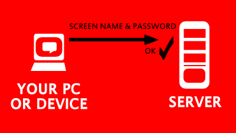
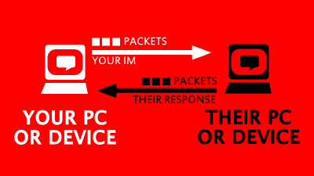

The general functionality of all IM networks includes user authentication with a network server, two-person instant messaging in real time, and the maintenance of contact or buddy lists.
IM networks make use of a client/server architecture (Jennings III). Users of an instant messaging software use a client application, potentially in the form of an app or on a web browser, to login to servers and exchange messages with other users (De Hoyos). Clients use domain names to determine the IP address and port to connect to a network's server (De Hoyos).
|  | Before the client can send messages, the client sends a user ID and password; this must be verified before the server will send the client data or allow it to send messages (De Hoyos). |
| Once verified, the server sends the client's contact list data; this typically includes information about the presence status, or availability, of each of their contacts (De Hoyos). The server also updates the user’s presence on all of their contacts' buddy lists (De Hoyos). | |
|  | After this, messages can be exchanged between clients. In order to maintain real time conversations and contacts lists, the client and the server remain connected for as long as the user is logged in via a persistent connection (De Hoyos). |
| This persistent connection allows the server to constantly update a user's presence data and the presence data of their contacts and to send messages instantly. | |
| When you sign out, the client lets the server know to end the connection, and the server updates presence data for the user's contacts. | |